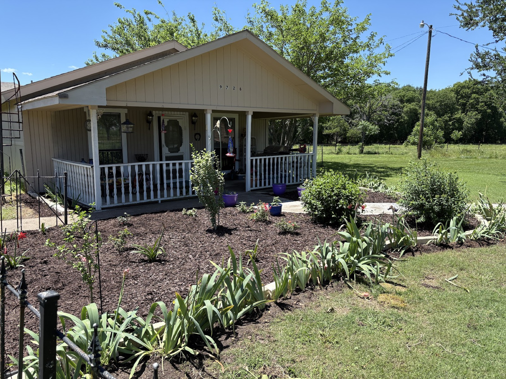

Dependable lawn care and landscaping for Kaufman, Talty, Crandall and Post Oak Bend — the same trusted hands, every visit.
From weekly mowing to landscaping and seasonal extras, it’s the kind of steady, responsive service Kaufman County keeps giving five stars.
Regular, on-schedule mowing and edging that keeps your lawn sharp all season — weekly or every other week.
Trimming and upkeep to keep your grass, trees and shrubs healthy and looking their best year-round.
Bed cleanups, plantings and fresh landscaping to lift the whole look of your property.
On-call winter service and Christmas outdoor light installation — set up on a timer, zero hassle for you.
Real Adair Custom Lawn projects — lawns, beds, landscaping and holiday lighting from homes we take care of.
“Tanner has cared for my lawn like it was his own. Very attentive and responsive. Even dealt with a few things for me while I was out of town. Highly recommend.”
“Tanner is a wonderful professional for your yard care, and also this year did our Christmas outdoor light installation. He is upfront about his services and is very responsive to whatever you need for healthy grass, trees and shrubs.”
“Tanner does a great job taking care of our lawn! He’s very reliable, great at communicating, and really reasonably priced! 10/10 recommend.”
Free quotes for Kaufman, Talty, Crandall & Post Oak Bend.
Call (214) 675-3132Call, text or email — we’ll get you a quick, honest quote.
{kind=link}
{kind=link}
{kind=link}
{kind=link}
{kind=link}
{kind=link}
{kind=link}